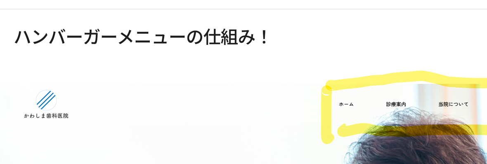

訓練校 IT スクール｜全2時間の集中授業
スマホでよく見る「3本線（≡）のハンバーガーメニュー」を作る回。疑似要素で3本線 → ×に変形 → スライドインで開閉まで。テクニカルで難しいけど、サイトを作るなら必須の技術。
| 時間 | セクション |
|---|---|
| 導入 | ハンバーガーメニューとは・作る手順 |
| 4時間目 | ナビをスマホ用レイアウトに上書き |
| 5時間目 | 3本線アイコンを作る（疑似要素） |
| 5時間目 | アイコンを枠の中央に置く（transform） |
| 終盤 | クリックで×に変形（rotate） |
| 終盤 | スライドインで開閉（fixed＋負のright） |
span＋::before＋::after（疑似要素）で作るcontent:"" 必須（空でもOK、無いと出ない）width:32px; height:2px; background:#000; display:blockdiv.hamburger に幅・高さ（42px）を持たせるtransform: translate(-50%,-50%) で中央にrotate(45deg) と rotate(-45deg)opacity ではなく rgba(…,0)（opacityだと子ごと消える）close/open）＝実際はJavaScriptposition:fixed＋right:-40% で画面外に隠し、openで right:03本線（≡）をクリックするとナビが開閉するあれ。形がハンバーガーに似てるから「ハンバーガーメニュー」。PCでは普通のリスト型ナビ、画面幅を狭めるとハンバーガーに切り替わるのが定番（最初からハンバーガーのサイトも増加中）。

今回は「普通のナビ → 狭めてハンバーガー」型なので、すべてメディアクエリ＋ブレイクポイント（今回は1000px）の中に書いていく。
空の span（真ん中の線）＋ ::before（上の線）＋ ::after（下の線）で3本線を作る。文字は書かず、CSSで形だけ作るのがコツ。
<div class="hamburger"> /* クリック領域 */ <span></span> /* 真ん中の線 */ </div>
/* 真ん中の線 */ .hamburger span { display: block; /* これが無いと線にならない */ width: 32px; height: 2px; background: #000; position: absolute; } /* 上下の線（疑似要素） */ .hamburger span::before, .hamburger span::after { content: ""; /* 必須！ */ position: absolute; width: 32px; height: 2px; background: #000; } .hamburger span::before { bottom: 8px; } /* 上にずらす */ .hamburger span::after { top: 8px; } /* 下にずらす */
クリック領域の div.hamburger に幅・高さ（42px）を持たせる（spanの32pxより大きく）。spanはabsoluteだと左上基準でズレるので、transform: translate(-50%,-50%) で中央へ。
.hamburger { position: absolute; right: 48px; top: 50%; transform: translateY(-50%); /* 縦中央に */ width: 42px; height: 42px; /* クリック領域 */ } .hamburger span { top: 50%; left: 50%; transform: translate(-50%, -50%); /* 枠の真ん中へ */ }
前回の「position absoluteは左上が基準→translateで自分の半分戻す」の応用。クリック領域(青い42px四角)の中に3本線がぴったり収まる。
×は線2本。真ん中の線を消し、上下の線を中央に集めて45°と-45°に回転させる。回転は transform: rotate()。
opacity: 0 にすると子要素（::before/::after）まで全部消えてしまう。なので背景色を rgba(0,0,0,0)（アルファ0）で透明にする。これなら真ん中の線だけ消える。
/* close クラスが付いたら×に */ .hamburger.close span { background: rgba(0,0,0,0); /* 真ん中を透明（opacityはNG） */ } .hamburger.close span::before { top: 0; transform: rotate(45deg); } .hamburger.close span::after { top: 0; transform: rotate(-45deg); /* 逆向きでバツに */ }
同じ45°だと1本に重なるので、片方は -45° にして×にする。close というクラスを付けたり外したりで切り替え。
ナビを普段は画面の外に置いておき、クリックしたら右からスーッと出てくる（スライドイン）。画面外に出すので position: fixed（absoluteではなく）＋ right をマイナスに。
nav { position: fixed; /* 画面基準で固定（absoluteから変更） */ right: -40%; /* 画面の外（右）に隠す */ } /* open クラスが付いたら表示 */ nav.open { right: 0; }
close や open というクラスを付けたり外したりする処理は JavaScriptで行う（まだ習っていない）。今日はクラスが付いた時/外れた時のCSS（見た目）まで。HTMLだけではクラスの付け外しはできない。
| 用語 | 意味 |
|---|---|
| ハンバーガーメニュー | 3本線(≡)をクリックで開閉するナビ。形が由来 |
| ブレイクポイント | レイアウトを切り替える画面幅（今回1000px） |
| ::before / ::after | 疑似要素。content必須。上下の線に使う |
| display: block | spanを線として表示するのに必要 |
| transform: translate(-50%,-50%) | 絶対配置の要素を自分の半分戻して中央に |
| transform: rotate(45deg) | 要素を回転（×を作る） |
| opacity vs rgba(…,0) | opacityは子ごと消える / rgbaは背景だけ透明 |
| position: fixed | 画面基準で固定（スライドインの土台） |
| right: -40% | 画面外に隠す（openで0に戻して表示） |
| close / open クラス | 状態切り替えの目印。付け外しはJavaScript |
| flex-direction: column | 横並びを縦並びに切り替え |
span＋::before＋::after（content必須・display:block）div.hamburger に幅・高さ（42px）top/left:50%＋translate(-50%,-50%)rotate(45deg) と rotate(-45deg)rgba(…,0)（opacityはNG）position:fixed＋right:-40%→openでright:0「結構テクニカルで難しいんですけど、サイト作るなら絶対これ覚えなきゃいけないんで。」
→ ハンバーガーメニューは必須スキル。難しくても避けて通れない。
「opacityを使うと全部消えちゃうんで、RGBAのアルファを使って透明にしていきます。」
→ 先生も一瞬ハマったポイント。opacityは子要素ごと消える落とし穴。
「一旦0ベースで、どっかで作ってみてください。」
→ 見ながらだと分かった気になる。ゼロから組むと本当の理解になる。